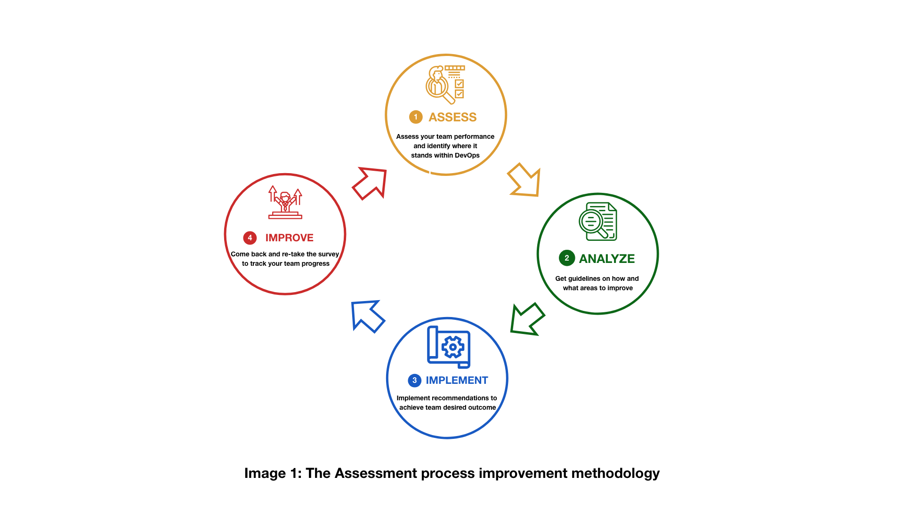

DevOps Self Assessment
The following survey is based on the State of DevOps Report that has been published annually since 2014, as part of the DevOps Research and Assessment (DORA). This six-year research program has validated a number of technical, process, measurement, and cultural capabilities to drive higher software delivery and organizational performance. The survey questions will measure and support the Continuous Improvement of these capabilities in IITB and ESDC. Teams are invited to complete the survey every 6 (six) to 12 (twelve) months to measure the success of their activities. The IT Strategy team recommends that teams complete all capabilities at least once to establish a full baseline.
Take the DevOps Self-Assessment or keep reading for more information.
What is the DevOps Self-Assessment tool
The DevOps Self-Assessment tool is a roadmap that helps to prospect self-improvement, uncover team challenges and opportunities through capabilities, identifies priorities and tracks the progress.
It is easy to use and produce credible results.
The tool provides the ability to review team performance and guidelines to achieve a desired outcome.
It drives technology performance improvement in the organization.
The DevOps Self-Assessment tool is a questionnaire that will help to measure team performance, understand strength and give recommendations on areas of improvement.
It will show the areas where the competencies of your team do not reach the level required to reach team goals.
When gaps do not get addressed, they tend to get bigger, eventually causing teams to collapse.
Provided recommendations for each section will fill the gaps in your team that allows them to grow and reach required goals.
Responses to the DevOps Self-Assessment will be stored locally on your computer (browser’s cache), and the Government of Canada does not save any information.
When you compare the competencies defined in the first assessment to the results you received in the second, you will find how your team performance progressed.
The process can be repeated until desired outcomes of team performance achieved.
What is the problem and solution
To manage today business environment challenges organizations need the ability to deliver software with speed and stability. It will help to improve technology and organizational performance.
Who is it for
All teams in IITB looking to continuously improve themselves and support the improvement efforts of their peers.
What is the purpose of the Assessment tool
Based on the analysis of the answers, IT teams within the organization can see whether it is moving in the right direction. DevOps Self-Assessment tool helps to better understand strengths and needs, outline current maturity and identify a road map of improvement area. For better outcomes use this path for continuous integration and delivery: 
DevOps Self-Assessment process
Our process includes:
- Invitation to take a survey
- Choose a topic to self-assess
- Take a survey on selected section
- Receive score (Beginner, Intermediate, Advanced)
- Read recommendation on how to improve
- Implement recommendations
- Come back and re-take the survey to see the progress
![A graphic with 11 elements demonstrating assessment process flow.
It expands from left to right.
The first element is an envelop icon with the text "IT teams receive a link to take an advantage of the assessment tool" connected to a surveyor filling out a survey icon with the text "Survey taking" which is connected next to a paper with check marks icon represented as a survey with the text "Scoring based on responses".
The survey icon is connected to 3 circles.
The circle titles are: top "High 90-100%" which is connected to thumps up icon with text "Your team is doing well! Keep going!"; middle "Medium 50-89%" which is connected to the icon with a box and two arrows above with the text "There is a room for your team to improve"; bottom: "Low 0-49%" which is connected to an icon with two boxes with a space between and arrow down above the space with the text "Fill your team performance gaps with new learning opportunities".
The last two circles with the title "Low" and "Medium" with the following icons are connected to the icon with the paper and magnifying glass on it.
This icon has a text "Recommendations on where and how to improve".
At the end, all of three circles with following icons are connected to a floppy disk icon with the text "Save results".](assets/images/assessment_tool_process.png)
Questions
Questions cover User Research, Development, Testing, Automation, Deployment, Management and Monitoring, which are all part of any product development cycle. It has 11 sections, each of them will take approximately 3-4 minutes to answer. A user can be assessed on any section of the choice and get the results immediately. Please note that the IT Strategy team recommends that teams complete all sections at least once to establish a full baseline.
Question Types
Do you agree with… [1-7]
- Strongly Disagree
- .
- .
- Neither Agree nor Disagree
- .
- .
- Strongly Agree
Scoring
Each survey section will provide a score which will help you to get an idea of where you and your team is and where your team can be on DevOps journey.
Average of “Do you agree with” questions
- Low: 1-3
- Medium: 4-5
- High: 6-7
When complete, the assessment results are immediately available on the page followed by recommendations.
Recommendations
To achieve goals of efficient cooperation, collaboration, and bug-free code each section provides short recommendations on how to improve and what actions to take with the reference on DevOps Research and Assessment (DORA) capabilities page.